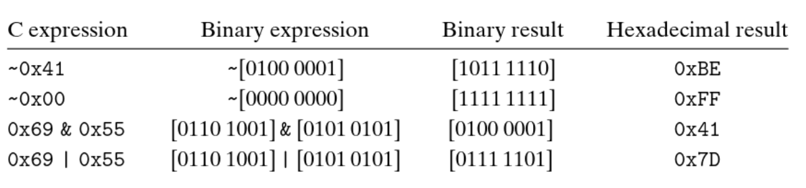

In C, we can apply the following operations on “integral” data types:
& - AND| – OR (inclusive OR)^ – XOR (exclusive OR)~ – NOT
By “Integral” we mean data of type int or char, and not float or
double as these are presented differently in memory.
These operations are performed on the individual bits inside a “bit vector”. (a bit vector being a series of bits)

One common use of bit-level operations is to implement masking operations, where we use a bit
pattern as a mask that indicates a selected set of bits within a word.
For example, if I want to extract the least significant bits of an integer x, I can implement the
mask x & 0xFF, which works like this:
Suppose x = 0x12345678
So in binary, x = 00010010 00110100 01010110 01111000
mask = 0xFF
So in binary, mask = 00000000 00000000 00000000 11111111
x & mask goes as follows:
00010010 00110100 01010110 01111000 &
00000000 00000000 00000000 11111111
___________________________________
00000000 00000000 00000000 01111000
thus extracting the least significant byte (01111000) out of x
this works because the operand
&will always yield to0if one of the inputs are0(thus eliminating bits that correspond to0in the mask), and will always yield to1if two inputs are1(thus successfully extracting1’s from x when they’re present), and will always yield to0if0was present inx(even when1is present in the mask).
We can also apply a set of logical operators:
&& – AND|| – OR! – NOT
Logical operators behave completely differently from bit-level operators: logical operators treat inputs as
either TRUE (if input isn’t of value 0) and FALSE if input has value
0.